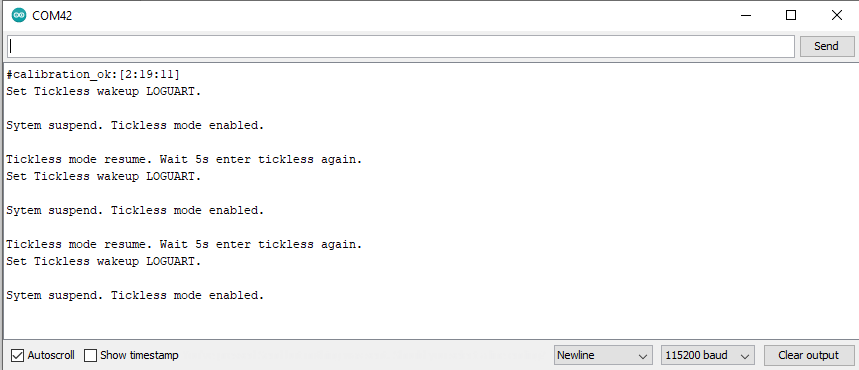
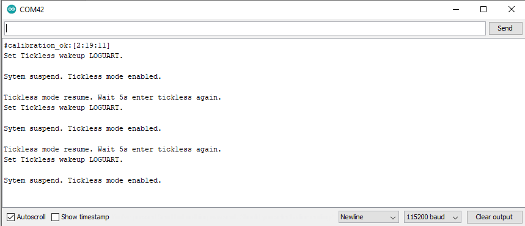

[RTL8722CSM] [RTL8722DM] Retrieve Universal Time (UTC) By Ameba¶
Preparation
Ameba x 1
Example
In this example, we connect Ameba to WiFi. Then send NTP (Network Time
Protocol, RFC 1305) request to NTP server using UDP. After receiving the
NTP request, the NTP server replies current UTC (Coordinated Universal
Time) packet. We will parse the UTC packet to show current UTC time in
the serial monitor. Open the example. “File” -> “Examples” ->
“AmebaWiFi” -> “WiFiUdpNtpClient” Modify the highlighted code
section (ssid, password, keyindex) to connect to your WiFi
network.
Modify the highlighted code
section (ssid, password, keyindex) to connect to your WiFi
network. Compile the code and upload it to Ameba. After pressing
the Reset button, Ameba connects to WiFi and sends NTP request packet to
NTP server “129.6.15.28”. We parse the replied packet and show UTC time
in serial monitor:
Compile the code and upload it to Ameba. After pressing
the Reset button, Ameba connects to WiFi and sends NTP request packet to
NTP server “129.6.15.28”. We parse the replied packet and show UTC time
in serial monitor:
{kind=link}